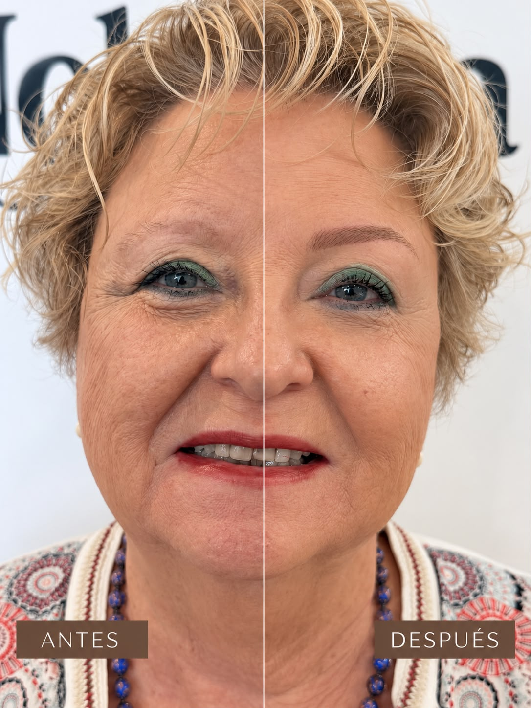

Estudio en Granollers · provincia de Barcelona
Microblading y nanoblading para Barcelona
Realizamos microblading y nanoblading manuales, Hair Stroke y Powder Brows. Si vienes desde Barcelona, envíanos antes fotos de tus cejas: te decimos qué técnica puede encajar y qué presupuesto esperar antes de desplazarte. Todas las citas se hacen en Nohuska Beauty Lab, Granollers.
Ver un antes y después propio de nanoblading y sus límites antes de consultar.
Valorar mis cejas antes de venir
Respuesta rápida
Nohuska Beauty Lab realiza microblading y nanoblading manuales en su estudio de Avinguda Sant Esteve, 40, Granollers (provincia de Barcelona). El nanoblading tiene una tarifa de referencia de 297 €, retoque no incluido. Microblading tiene una tarifa de referencia de 350 €, confirmada en la valoración. Hair Stroke, Powder Brows y correcciones de trabajos anteriores se presupuestan tras una valoración gratuita, que puede empezar por WhatsApp con fotografías.
Microblading o nanoblading: cuál elegir
Las dos son técnicas manuales que dibujan trazos parecidos al pelo. No decidimos por el nombre comercial: el nombre «nano» no garantiza por sí solo un trazo más fino, más natural o más duradero. Elegimos después de ver tu piel, cuánto pelo natural tienes, su dirección y si hay pigmento anterior.
Si buscas un acabado de sombra suave en lugar de trazos, comparamos también Powder Brows. Y si tu piel es grasa, sensible o ya tiene un trabajo previo, lo comentamos en la valoración: son factores que pueden condicionar qué técnica encaja.
Qué incluye la propuesta
Precio claro antes de reservar
El microblading manual tiene una tarifa de referencia de 350 €. El nanoblading manual tiene una tarifa de referencia de 297 €. Ambas tarifas se confirman en la valoración y no incluyen el retoque: pregunta su precio y cuándo conviene valorarlo antes de fijar la cita.
Hair Stroke, Powder Brows y las correcciones no tienen un precio único publicado porque dependen del estado de la piel, del pelo y de si hay que trabajar sobre pigmento anterior. Te damos el presupuesto cerrado después de la valoración, antes de decidir.
Al comparar presupuestos en Barcelona, revisa qué técnica concreta te proponen y por qué, si el retoque está incluido y qué límites supone un trabajo anterior.
Envía tus fotos
Luz natural, sin maquillaje en las cejas y sin filtro: de frente y de perfil. Si tienes un trabajo anterior, incluye una foto de cerca.
Enviar mis fotosUn caso real de nanoblading
Antes y después de un nanoblading manual realizado en Nohuska, publicado con autorización. No se presenta como evolución curada: el tiempo transcurrido no está documentado. Ilustra un caso concreto y no garantiza el mismo acabado en todas las cejas.
Más casos y la comparativa completa de técnicas en la guía de micropigmentación de cejas.

Cómo llegar desde Barcelona
En transporte público: consulta la R2 Nord hasta Granollers Centre. La R8 conecta municipios del Vallès, pero no pasa por Barcelona ciudad. Si eliges la R3 hacia Granollers-Canovelles, comprueba el servicio vigente y los posibles transbordos o transportes alternativos.
En coche: planifica la ruta por la C-17 o la AP-7 según tu punto de salida. No anunciamos tiempos fijos ni aparcamiento reservado.
Antes de viajar, confirma el tratamiento, el presupuesto y la cita. Pregunta también cómo se organizarán el seguimiento y un posible repaso, que no está incluido en los 297 € de nanoblading. La orientación por fotos no confirma por sí sola una cita de tratamiento.
Preguntas sobre cejas para Barcelona
¿Nohuska está en Barcelona ciudad?
No. Todas las citas se realizan en Avinguda Sant Esteve, 40, 08402 Granollers, provincia de Barcelona.
¿Cuánto cuesta el nanoblading?
El nanoblading manual tiene una tarifa de referencia de 297 €; el microblading manual, de 350 €. Las tarifas se confirman en la valoración y no incluyen retoque. Hair Stroke, Powder Brows y trabajos sobre pigmento anterior se presupuestan tras la valoración.
¿Qué diferencia hay entre microblading y nanoblading?
Ambas son técnicas manuales de trazos. Elegimos según piel, pelo y trabajos anteriores; el nombre no garantiza por sí solo un resultado más fino o duradero.
¿Puedo hacer la valoración antes de desplazarme?
Sí, y es gratuita. Envía fotos por WhatsApp para una primera orientación; la técnica se confirma en persona.
¿Cómo llego desde Barcelona?
Desde Barcelona, consulta la R2 Nord hasta Granollers Centre y verifica horarios y alteraciones. La R8 no pasa por Barcelona ciudad; para la R3 comprueba el servicio vigente hacia Granollers-Canovelles. En coche, planifica la ruta por la C-17 o la AP-7. Confirma la cita antes de desplazarte.
¿Podéis corregir un microblading anterior?
Depende del color, la forma y el estado del trabajo previo. Lo valoramos con fotos actuales y en persona antes de confirmar nada.
¿Cómo evoluciona al curar?
El pigmento suele verse más intenso al principio y se suaviza durante la curación. La fijación y el tono final son individuales.
¿Y si no quiero micropigmentar?
Compara Natural Brow y el tinte híbrido de cejas, que trabajan el pelo existente.
Información relacionada
Una consulta por WhatsApp no confirma una reserva. Acordaremos contigo el tratamiento, la fecha y la hora.
Diseñemos tus cejas antes de elegir técnica.
Valoración gratuita por fotos y tratamiento presencial en Granollers.
Consultar por WhatsApp